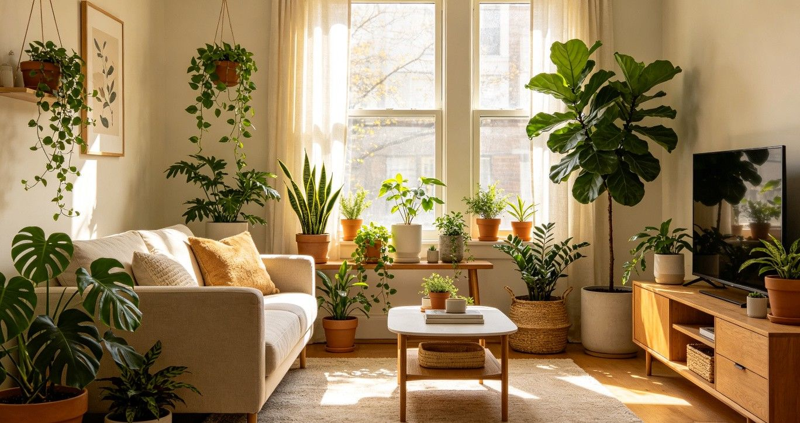

为什么选择我们
在信息爆炸的时代，网上关于植物养护的内容多如牛毛，但真正适合新手、系统全面且易于实践的却少之又少。绿植养护指南正是为了解决这一痛点而生。我们坚持用最通俗易懂的语言，把专业养护知识转化为每个人都能立刻动手操作的实用方法。从浇水频率的判断到光照位置的安排，从土壤的选择到病虫害的防治，每一个知识点都经过我们亲身验证，确保可靠有效。
我们的内容覆盖了常见室内植物品类，无论你养的是绿萝、龟背竹、多肉还是琴叶榕，都能在这里找到针对性的养护方案。更重要的是，我们不是高高在上的专家，而是和你一样的植物爱好者，所以更懂你的困惑和需求。选择绿植养护指南，就是选择了一条少走弯路的养护之路。
今日养护小贴士
浇水前用手指插入土壤2-3cm，如果感觉湿润就暂缓浇水。这是最简单的判断方法。
精选养护指南
最受欢迎的入门文章，帮你快速上手植物养护


植物生病了？快速自查
不确定植物出了什么问题？回答几个简单问题，帮你找到原因和解决方案
养护小贴士
记住这几个要点，养植物其实很简单
宁干勿湿
大多数室内植物死于浇水过多。不确定时，宁可少浇也不要多浇。
观察光照
把植物放在合适的光照位置。朝南窗户光照最强，朝北最弱。
定期观察
每天花一分钟看看你的植物。叶子发黄、下垂都是它在向你求救。
耐心最重要
植物生长需要时间。不要频繁移动它或过度干预，给它时间适应环境。
新手常犯的5个错误
养植物并不难，但很多新手都会不自觉地踩进这些坑。避开它们，你的养护之路会顺畅很多。
-
浇水太多——这是最常见的"植物杀手"
大多数室内植物死于浇水过多而非过少。新手往往看到土表干了就浇水，但实际上花盆深处的土壤可能还很湿润。正确的做法是：每次浇水前用手指插入土壤两到三厘米，或者用筷子插入土中检查湿度。如果内部仍然湿润，就再等几天。记住一个原则——宁干勿湿。大多数植物在轻微干旱时只会表现出暂时的萎蔫，但根部一旦腐烂，就很难挽救了。
-
把植物放在光照不对的地方
光照是植物进行光合作用、制造养分的能量来源。很多新手把植物放在完全照不到阳光的角落，或者直接放在烈日暴晒的窗台上，这两种极端都不利于植物生长。即使是标榜"耐阴"的植物，也需要一定的散射光才能健康生长。建议你花几分钟观察家中不同位置的光照情况——朝南的窗户光线最强，适合仙人掌、多肉等喜光植物；朝东和朝西的窗户光线适中，适合大多数观叶植物；朝北的窗户光线最弱，只适合少数耐阴品种。
-
从不给植物换盆换土
植物在花盆里生长一到两年后，根系会逐渐占满整个花盆，土壤中的养分也会被消耗殆尽。如果长期不换盆，植物的生长速度会明显变慢，叶片可能变小、发黄，甚至出现根部从排水孔钻出来的情况。一般来说，生长快速的植物每年换一次盆，生长较慢的植物每两年换一次。换盆时选择比原盆大一号的新盆，同时更换新鲜的营养土，这能让植物重新焕发活力。
-
频繁移动植物的位置
植物对环境变化非常敏感，它们需要时间来适应光照、温度、湿度等环境条件。有些新手看到植物状态不好就频繁换位置，今天搬到窗边，明天搬到茶几上，后天又搬到书架上，结果植物需要不断重新适应新环境，反而越来越虚弱。建议你为植物选定一个合适的位置后，就让它安顿下来。如果确实需要移动，也要给植物至少一到两周的适应期，不要短期内反复挪动。
-
忽视病虫害的早期信号
很多病虫害在早期都有明显的迹象，但新手往往因为缺乏经验而忽略。比如叶片上出现细小的白色斑点可能是红蜘蛛的迹象，叶片背面有黏腻物质可能是蚧壳虫，根部发黑变软则是烂根的前兆。一旦发现这些异常，越早处理效果越好，成本也越低。建议每次浇水时顺便检查一下叶片的正反面和茎部，养成这个习惯能帮你及时发现并解决大部分问题。如果等到植物大面积枯萎才行动，往往已经错过了最佳救治时机。